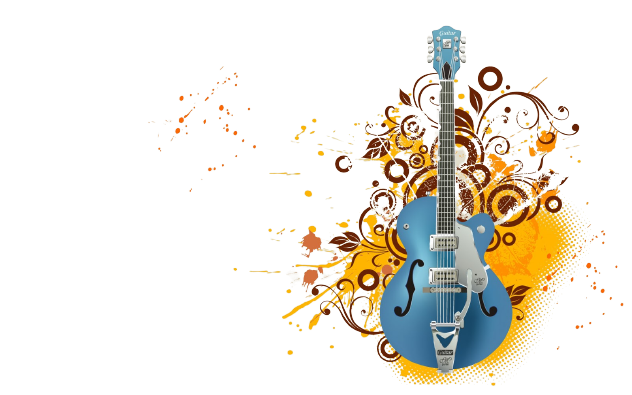

Welcome
PT.PW MUSIC RECORD

Jasa remix termurah dan berkualitas
dan mendapatkan bonus di setiap ketentuan minimal orderan. Bergaransi copyrightdan sudah terverifikasi oleh artis artis DJ besar Indonesia. Ayo Buruan klik layanan sekarang!!! website ini terus aktif selama 24 jam kami buka setiap hari.
Remix
adalah versi alternatif dari sebuah lagu yang direkam , terbuat dari versi aslinya atau lagu yang sudah diedit atau benar-benar diciptakan untuk terdengar berbeda dari versi aslinya. Misalnya, nada suara penyanyi 'atau tempo mungkin berubah, mungkin akan dibuat lebih pendek atau lebih panjang, atau itu mungkin suara diduplikasi untuk menciptakan duet. Yang paling utamanya adalah Lagu tersebut sudah memiliki izin dari pemilik Original atau sudah legal.
Mashup
adalah lagu atau komposisi yang dibuat dengan memadukan dua atau lebih dari suatu lagu lagu , biasanya dengan melapisi jalur vokal dari satu lagu mulus atas lagu instrumental lain. Mushup Memungkin-kan mendapat hak/izin secara legal baik dari pemilik sah lagu tersebut atau melalui sebuah Label.
Sofware yang digunakan perusahaan kami dalam bekerja
FL Studio yang bisa dibilang Fruity Loops Studio merupakan sebuah Software yang digunakan untuk me-remake, merekam, membuat serta mengubah audio (lagu) dimana aplikasi ini ditujukan untuk genre EDM (Electronic Dance Music). Banyak musisi dunia yang memakai software ini dalam bermusik seperti Hardwell, David Guetta, Martin Garix, Alan Walker, DLL. Tetapi, bukan berarti software ini dikhususkan untuk mereka yang menggunakan Genre EDM. Software ini juga bisa digunakan untuk Me-Remake Atau Membuat musik-musik Dangdut, Pop, Rock, dan Country bahkan musik bernuansa tradisional seperti karawitan sunda dan musik etnik lainnya. Dengan software ini, kalian juga bisa REMIX musik modern dengan musik tradisional menjadi satu bagian yang pas dan padu.